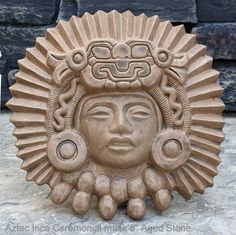

Sobre o Modelo
A religião maia era politeísta, com deuses associados à natureza, aos astros e às atividades humanas. O medalhão representa Kinich Ahau, o Deus do Sol.
Origem
Mesoamérica – atual México
Data Histórica
Entre os séculos IV e X
Curiosidades
- Kinich Ahau era associado à vida, luz e calor.
- Os maias acreditavam que ele garantia a renovação do ciclo diário do sol.
- Era um dos deuses mais importantes do panteão maia.